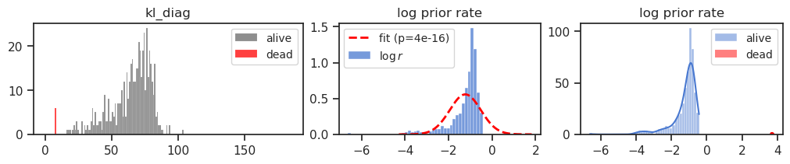

(15) results: temp#
Motivation: Explore the effect of T_stop, using the new vH16 dataset. Take a look at the results.
Show code cell source
# HIDE CODE
import os, sys
from IPython.display import display
# tmp & extras dir
git_dir = os.path.join(os.environ['HOME'], 'Dropbox/git')
extras_dir = os.path.join(git_dir, 'jb-vae/_extras')
fig_base_dir = os.path.join(git_dir, 'jb-vae/figs')
tmp_dir = os.path.join(git_dir, 'jb-vae/tmp')
# GitHub
sys.path.insert(0, os.path.join(git_dir, '_PoissonVAE'))
from figures.fighelper import *
# warnings, tqdm, & style
warnings.filterwarnings('ignore', category=DeprecationWarning)
warnings.filterwarnings('ignore', category=FutureWarning)
warnings.filterwarnings('ignore', category=UserWarning)
from rich.jupyter import print
%matplotlib inline
set_style()
Setup#
device_idx = 1
device = f'cuda:{device_idx}'
from analysis.final import sort_fits, analyze_fits, load_quick
from analysis.loggabor import fit_loggabor
from figures.imgs import plot_weights, make_grid
from figures.theta import plot_theta
def fit_norm(data):
rv = sp_stats.norm(*sp_stats.norm.fit(data))
ks_test = sp_stats.kstest(
rvs=data,
cdf='norm',
args=(rv.mean(), rv.std()),
)
return rv, ks_test
def plot_kl_log_rates(dead_thres = None):
fig, axes = create_figure(1, 3, (10, 2), width_ratios=[2, 1.5, 1.5])
# plot kl
bins = np.linspace(0, 185, 186)
sns.histplot(loss['kl_diag'][~dead] * 1000, bins=bins, stat='count', color='dimgrey', label='alive', ax=axes[0])
sns.histplot(loss['kl_diag'][dead] * 1000, bins=bins, stat='count', color='r', label='dead', ax=axes[0])
if dead_thres is not None:
axes[0].axvline(dead_thres * 1000, color='r', ls='--', alpha=0.6)
axes[0].locator_params(axis='x', nbins=7)
axes[0].set_title('kl_diag')
# fit log normal
rv, ks_test = fit_norm(prior_log_rate[~dead])
xs = np.linspace(
start=rv.ppf(1e-5),
stop=rv.ppf(1 - 1e-5),
num=10000,
)
pdf = rv.pdf(xs)
# plot prior rates + log normal fit
sns.histplot(prior_log_rate[~dead], stat='density', color=sns.color_palette('muted')[0], label=r'$\log r$', ax=axes[1])
axes[1].plot(xs, pdf, color='r', lw=2, ls='--', label=f'fit (p={ks_test.pvalue:1.1g})')
axes[1].locator_params(axis='x', nbins=7)
axes[1].set_title('log prior rate')
sns.histplot(prior_log_rate[~dead], stat='count', color=sns.color_palette('muted')[0], label='alive', kde=True, ax=axes[2])
sns.histplot(prior_log_rate[dead], stat='count', color='r', label='dead', kde=True, ax=axes[2])
axes[2].locator_params(axis='x', nbins=7)
axes[2].set(title='log prior rate') # , yscale='log')
for ax in axes.flat:
ax.set(ylabel='')
ax.legend(fontsize=10)
plt.show()
def perform_test(key: str = 'prior_rate', log: bool = True):
# key = 'prior_rate' if tr.model.cfg.fit_prior else 'kl'
try:
rates_cardinal = results.loc[(results['label'] == 'cardinal') & ~dead, key].values
rates_oblique = results.loc[(results['label'] == 'oblique') & ~dead, key].values
if log:
rates_cardinal, rates_oblique = map(
np.log, [rates_cardinal, rates_oblique])
u_test = sp_stats.mannwhitneyu(rates_cardinal, rates_oblique, method='auto')
t_test = sp_stats.ttest_ind(rates_cardinal, rates_oblique, equal_var=True)
a, b = len(rates_cardinal), len(rates_oblique)
cardinal_ratio = a / (a+b)
return u_test, t_test, cardinal_ratio
except KeyError:
return
def accept_fn(name):
archi = name.split('-')[1]
accept = (
archi in ['<lin|lin>', '<mlp+b|lin>']
and '-b' not in name
)
return accept
root = 'Dropbox/chkpts/PoissonVAE'
fits, fits_st, fits_etc = sort_fits(root)
fits = sorted(filter(accept_fn, fits))
msg = ' ——— '.join([
f"# fits: {len(fits)}",
f"# fits_st: {len(fits_st)}",
f"# fits_etc: {len(fits_etc)}",
])
print(msg)
# fits: 120 ——— # fits_st: 0 ——— # fits_etc: 0
Temp results#
Prepare df#
%%time
analysis_mode = 'temp'
file_name = f"df_{analysis_mode}"
try:
df = pjoin(tmp_dir, f"{file_name}.df")
df = pd.read_pickle(df)
except FileNotFoundError:
df = analyze_fits(fits, device, analysis_mode)
save_obj(
obj=df,
file_name=file_name,
save_dir=tmp_dir,
verbose=True,
mode='df',
)
CPU times: user 1.66 ms, sys: 959 µs, total: 2.62 ms
Wall time: 2.23 ms
make plots#
fig, axes = create_figure(2, 3, (12, 4), 'all')
for i, enc in enumerate(['lin', 'mlp']):
_df = df.loc[df['enc_type'] == enc]
for j, item in enumerate(['nelbo', 'mse', 'mse_map']):
ax = axes[i, j]
sns.pointplot(
data=_df,
x='temp_stop',
hue='hard_fwd',
palette={'True': 'dimgrey', 'False': 'tomato'},
y=item,
ax=ax,
)
# ax.set_ylim(
# _df[item].min() * 0.97,
# _df[item].max() * 1.02,
# )
ax.tick_params(axis='x', labelrotation=-90)
ax.set_ylabel('')
if i == 0:
ax.set_title(item)
ax.set_xlabel('')
if i != 1 or j != 2:
move_legend(ax)
if j == 0:
ax.set_ylabel(enc)
add_grid(axes)
plt.show()
fig, axes = create_figure(2, 3, (12, 4), 'all')
for i, enc in enumerate(['lin', 'mlp']):
_df = df.loc[
(df['temp_stop'] < 0.3) &
(df['enc_type'] == enc)
]
for j, item in enumerate(['nelbo', 'mse', 'mse_map']):
ax = axes[i, j]
sns.pointplot(
data=_df,
x='temp_stop',
hue='hard_fwd',
palette={'True': 'dimgrey', 'False': 'tomato'},
y=item,
ax=ax,
)
# ax.set_ylim(
# _df[item].min() * 0.97,
# _df[item].max() * 1.02,
# )
ax.tick_params(axis='x', labelrotation=-90)
ax.set(ylabel='')
if i == 0:
ax.set_title(item)
ax.set_xlabel('')
if i != 1 or j != 2:
move_legend(ax)
if j == 0:
ax.set_ylabel(enc)
add_grid(axes)
plt.show()
df2p = df.loc[
(df['temp_stop'] <= 0.3) &
(df['hard_fwd'] == 'False')
]
fig, axes = create_figure(2, 3, (12, 4), 'all')
for i, enc in enumerate(['lin', 'mlp']):
_df = df2p.loc[df['enc_type'] == enc]
for j, item in enumerate(['nelbo', 'mse', 'kl']):
ax = axes[i, j]
sns.pointplot(
data=_df,
x='temp_stop',
hue='hard_fwd',
palette={'True': 'dimgrey', 'False': 'tomato'},
y=item,
ax=ax,
)
# ax.set_ylim(
# _df[item].min() * 0.97,
# _df[item].max() * 1.02,
# )
ax.tick_params(axis='x', labelrotation=-90)
ax.set(ylabel='')
if i == 0:
ax.set_title(item)
ax.set_xlabel('')
if i != 1 or j != 2:
move_legend(ax)
if j == 0:
ax.set_ylabel(enc)
add_grid(axes)
plt.show()

fig, axes = create_figure(2, 3, (12, 4), 'all')
for i, enc in enumerate(['lin', 'mlp']):
_df = df2p.loc[df['enc_type'] == enc]
for j, item in enumerate(['nelbo', 'mse', 'kl']):
ax = axes[i, j]
sns.pointplot(
data=_df,
x='temp_stop',
hue='hard_fwd',
palette={'True': 'dimgrey', 'False': 'tomato'},
y=item,
ax=ax,
)
# ax.set_ylim(
# _df[item].min() * 0.97,
# _df[item].max() * 1.02,
# )
ax.tick_params(axis='x', labelrotation=-90)
ax.set(ylabel='')
if i == 0:
ax.set_title(item)
ax.set_xlabel('')
if i != 1 or j != 2:
move_legend(ax)
if j == 0:
ax.set_ylabel(enc)
axes[0, 0].set_ylim((168, 170))
axes[1, 0].set_ylim((165, 167))
add_grid(axes)
plt.show()

Table summaries#
df.pivot_table(values='nelbo', index='temp_stop', columns=['enc_type', 'hard_fwd'])
| enc_type | lin | mlp | ||
|---|---|---|---|---|
| hard_fwd | False | True | False | True |
| temp_stop | ||||
| 0.01 | 168.399292 | 168.243103 | 165.705963 | 165.503555 |
| 0.05 | 168.276962 | 168.534576 | 165.706909 | 166.124695 |
| 0.10 | 168.407394 | 170.142807 | 165.834610 | 169.649643 |
| 0.12 | 168.515060 | 170.770767 | 165.839096 | 170.422318 |
| 0.15 | 168.622604 | 171.507431 | 166.002182 | 171.396606 |
| 0.20 | 169.155991 | 172.942078 | 166.542236 | 172.752975 |
| 0.30 | 171.488037 | 174.826721 | 167.889023 | 174.854431 |
| 0.40 | 175.430893 | 174.799927 | 169.702682 | 175.293503 |
| 0.50 | 181.958176 | 174.179855 | 171.275101 | 174.692871 |
| 0.80 | 214.019608 | 172.203995 | 174.621948 | 171.863297 |
df.pivot_table(values='mse', index='temp_stop', columns=['enc_type', 'hard_fwd'])
| enc_type | lin | mlp | ||
|---|---|---|---|---|
| hard_fwd | False | True | False | True |
| temp_stop | ||||
| 0.01 | 138.306793 | 137.563736 | 134.414108 | 133.557114 |
| 0.05 | 136.733734 | 135.843994 | 133.693176 | 132.005783 |
| 0.10 | 135.816116 | 137.961777 | 133.056351 | 137.658691 |
| 0.12 | 135.529953 | 138.877121 | 132.854141 | 138.877625 |
| 0.15 | 135.130692 | 140.045181 | 132.579391 | 140.427628 |
| 0.20 | 134.762878 | 142.286423 | 132.353165 | 142.628036 |
| 0.30 | 135.408066 | 145.444992 | 132.303696 | 145.848984 |
| 0.40 | 138.011108 | 145.564346 | 132.967911 | 146.468216 |
| 0.50 | 143.513992 | 144.359299 | 133.678955 | 145.183517 |
| 0.80 | 174.095230 | 138.314529 | 135.797714 | 138.653610 |
Plot dictionary elements#
grids = {}
for name in tqdm(fits):
if 'mach-1' not in name:
continue
tr, meta = load_quick(
pjoin(add_home(root), name),
device=device,
verbose=False,
lite=True,
)
data, loss, etc = tr.validate()
w = tr.model.fc_dec.weight.data.T.reshape(-1, 16, 16)
w = tonp(w)[np.argsort(loss['kl_diag'])]
key = (
tr.model.cfg.enc_type,
'hard' if tr.model.cfg.hard_fwd else 'soft',
tr.cfg.temp_stop,
)
grids[key] = make_grid(
x=w,
grid_size=(16, 32),
normalize=True,
method='min-max',
)
len(grids)
100%|████████████████████████████████████████████████████████████████████████████████████████████| 120/120 [00:26<00:00, 4.50it/s]
40
enc_str, hard_str, temp_stop = [sorted(set(e)) for e in zip(*grids)]
print(enc_str, hard_str, temp_stop)
['lin', 'mlp'] ['hard', 'soft'] [0.01, 0.05, 0.1, 0.12, 0.15, 0.2, 0.3, 0.4, 0.5, 0.8]
nrows = len(enc_str) * len(hard_str)
ncols = len(temp_stop)
fig, axes = create_figure(
nrows=nrows,
ncols=ncols,
figsize=(9 * ncols, 1.9 * ncols),
sharex='all',
sharey='all',
)
remove_ticks(axes, False)
for i, temp in enumerate(temp_stop):
for j, (enc, hardness) in enumerate(itertools.product(enc_str, hard_str)):
ax = axes[j, i]
ax.imshow(
grids[(enc, hardness, temp)],
cmap='Greys_r',
vmin=0,
vmax=1,
)
tit = f"enc = {enc} — T = {temp:0.2g} / ({hardness})"
ax.set_title(tit, fontsize=18)
fig.savefig(pjoin(fig_base_dir, 'phi_temp.pdf'), bbox_inches='tight')
plt.show()

Rate vs. orientation: 2 examples#
One Lin and one MLP example, both: temp = 0.1
Lin — soft+t0.1#
name = next(f for f in fits if 'soft+t0.1' in f and '<lin|lin>' in f)
print(name)
poisson-<lin|lin>-vH16-soft+t0.12_mach-1_(2024_07_15,19:09)
tr, meta = load_quick(
pjoin(add_home(root), name),
device=device,
verbose=False,
lite=True,
)
prior_log_rate = tonp(tr.model.log_rate.squeeze())
data, loss, etc = tr.validate()
print(f"{tr.model.cfg.name()}\n{tr.cfg.name()}")
poisson_uniform_c(-4)_vH16_z-512_fp_<lin|lin>_seed-1 mc_b1000-ep3000-lr(0.005)_beta(1:0x0.5)_temp(0.12:lin-0.5)_gr(500)
Find dead neurons#
dead_thres = 0.01
dead = np.logical_or(
loss['kl_diag'] < dead_thres,
prior_log_rate > 1.0,
)
dead.sum()
6
Plot kl / log rate#
plot_kl_log_rates(dead_thres=dead_thres)
The other method for dead neurons#
dead = tr.find_dead_neurons(kl=loss['kl_diag'])
dead.sum()
6
plot_kl_log_rates()

Fit loggabor#
results = fit_loggabor(tr, verbose=True)
100%|███████████| 512/512 [00:19<00:00, 26.47it/s]
results.loc[results['sf_0'] > 10, 'sf_0'] = np.nan
results.iloc[np.logical_or(dead, np.isnan(results['theta']))] = np.nan
results.describe()
| x_pos | y_pos | theta | sf_0 | phase | B_sf | B_theta | theta_deg | kl | prior_rate | |
|---|---|---|---|---|---|---|---|---|---|---|
| count | 504.000000 | 504.000000 | 504.000000 | 502.000000 | 504.000000 | 504.000000 | 504.000000 | 504.000000 | 504.000000 | 504.000000 |
| mean | 7.452024 | 7.495961 | 0.007788 | 0.265079 | -0.089274 | 0.466242 | 0.418761 | 91.874792 | 0.065240 | 0.344239 |
| std | 3.986186 | 4.188324 | 1.007727 | 0.088662 | 1.307107 | 0.345453 | 0.473455 | 46.965017 | 0.014794 | 0.142011 |
| min | 0.391066 | 0.271387 | -1.570796 | 0.088350 | -5.238232 | 0.060131 | 0.073546 | 0.225499 | 0.017446 | 0.016960 |
| 25% | 4.030548 | 3.809759 | -0.917936 | 0.218963 | -0.885089 | 0.356678 | 0.226895 | 54.991860 | 0.057539 | 0.255550 |
| 50% | 7.251725 | 7.363793 | -0.013363 | 0.257396 | -0.152916 | 0.434034 | 0.325134 | 93.847811 | 0.068820 | 0.371404 |
| 75% | 10.771768 | 11.047740 | 0.940907 | 0.292635 | 0.710152 | 0.509873 | 0.485060 | 128.630399 | 0.076141 | 0.443495 |
| max | 14.657301 | 14.739676 | 1.570796 | 0.964994 | 3.977614 | 7.419360 | 5.742322 | 179.789643 | 0.103297 | 0.648086 |
perform statistical test#
u_test, t_test, cardinal_ratio = perform_test()
print(f"cardinal ratio: {cardinal_ratio:0.3g}\n\n{t_test}\n{u_test}")
cardinal ratio: 0.524 TtestResult(statistic=-9.862404376814732, pvalue=4.322931106646332e-21, df=502.0) MannwhitneyuResult(statistic=17961.0, pvalue=4.417457892759626e-17)
plot results#
fig, _ = plot_theta(results)

_ = tr.model.show(order=np.argsort(loss['kl_diag']))
_ = tr.model.show(order=np.argsort(results['sf_0'].values))
MLP — soft+t0.1#
name = next(f for f in fits if 'soft+t0.1' in f and '<mlp+b|lin>' in f)
print(name)
poisson-<mlp+b|lin>-vH16-soft+t0.12_mach-1_(2024_07_15,18:01)
tr, meta = load_quick(
pjoin(add_home(root), name),
device=device,
verbose=False,
lite=True,
)
prior_log_rate = tonp(tr.model.log_rate.squeeze())
data, loss, etc = tr.validate()
print(f"{tr.model.cfg.name()}\n{tr.cfg.name()}")
poisson_uniform_c(-4)_vH16_z-512_k-16_fp_<mlp+b|lin>_seed-1 mc_b1000-ep3000-lr(0.005)_beta(1:0x0.5)_temp(0.12:lin-0.5)_gr(500)
Find dead neurons#
dead_thres = 0.01
dead = np.logical_or(
loss['kl_diag'] < dead_thres,
prior_log_rate > 1.0,
)
dead.sum()
25
Plot kl / log rate#
plot_kl_log_rates(dead_thres=dead_thres)
The other method for dead neurons#
dead = tr.find_dead_neurons(kl=loss['kl_diag'])
dead.sum()
25
plot_kl_log_rates()
Fit loggabor#
results = fit_loggabor(tr, verbose=True)
8%|▉ | 39/512 [00:01<00:17, 26.67it/s]
warning: zero norm model with pars= Parameters([('x_pos', <Parameter 'x_pos', value=10.100781050619148, bounds=[0:16]>), ('y_pos', <Parameter 'y_pos', value=6.738352242533012, bounds=[0:16]>), ('theta', <Parameter 'theta', value=-0.9316111833425071, bounds=[-1.5707963267948966:1.5707963267948966]>), ('sf_0', <Parameter 'sf_0', value=0.1309638558486107, bounds=[0.001:inf]>), ('phase', <Parameter 'phase', value=-1.2288477575142753, bounds=[-inf:inf]>), ('B_sf', <Parameter 'B_sf', value=0.14780831636674086, bounds=[0.001:inf]>), ('B_theta', <Parameter 'B_theta', value=0.04431663037796041, bounds=[0.001:inf]>)])
12%|█▌ | 64/512 [00:02<00:13, 32.42it/s]
warning: zero norm model with pars= Parameters([('x_pos', <Parameter 'x_pos', value=15.848469519967882, bounds=[0:16]>), ('y_pos', <Parameter 'y_pos', value=9.570821036447644, bounds=[0:16]>), ('theta', <Parameter 'theta', value=-0.14326680359359933, bounds=[-1.5707963267948966:1.5707963267948966]>), ('sf_0', <Parameter 'sf_0', value=0.2164456471434807, bounds=[0.001:inf]>), ('phase', <Parameter 'phase', value=0.13522374830659975, bounds=[-inf:inf]>), ('B_sf', <Parameter 'B_sf', value=0.047981086362566816, bounds=[0.001:inf]>), ('B_theta', <Parameter 'B_theta', value=0.05185429223641658, bounds=[0.001:inf]>)])
52%|█████▋ | 267/512 [00:10<00:20, 11.94it/s]
warning: zero norm model with pars= Parameters([('x_pos', <Parameter 'x_pos', value=0.07490751054651401, bounds=[0:16]>), ('y_pos', <Parameter 'y_pos', value=8.171751867625346, bounds=[0:16]>), ('theta', <Parameter 'theta', value=-0.8281880760523941, bounds=[-1.5707963267948966:1.5707963267948966]>), ('sf_0', <Parameter 'sf_0', value=0.2663621083158215, bounds=[0.001:inf]>), ('phase', <Parameter 'phase', value=-1.5099994166311899, bounds=[-inf:inf]>), ('B_sf', <Parameter 'B_sf', value=0.6957946752061489, bounds=[0.001:inf]>), ('B_theta', <Parameter 'B_theta', value=0.042417767245919724, bounds=[0.001:inf]>)])
100%|███████████| 512/512 [00:21<00:00, 24.14it/s]
results.loc[results['sf_0'] > 10, 'sf_0'] = np.nan
results.iloc[np.logical_or(dead, np.isnan(results['theta']))] = np.nan
results.describe()
| x_pos | y_pos | theta | sf_0 | phase | B_sf | B_theta | theta_deg | kl | prior_rate | |
|---|---|---|---|---|---|---|---|---|---|---|
| count | 4.830000e+02 | 4.830000e+02 | 483.000000 | 483.000000 | 483.000000 | 483.000000 | 483.000000 | 483.000000 | 483.000000 | 483.000000 |
| mean | 7.494079e+00 | 7.361196e+00 | -0.008410 | 0.279916 | -0.127222 | 0.541631 | 0.292229 | 93.431161 | 0.067775 | 0.110127 |
| std | 3.744163e+00 | 4.155062e+00 | 0.999112 | 0.166718 | 1.154630 | 0.198361 | 0.232784 | 47.726790 | 0.025352 | 0.093048 |
| min | 2.431122e-11 | 2.288083e-07 | -1.570796 | 0.085799 | -4.705998 | 0.069572 | 0.070993 | 0.195671 | 0.013417 | 0.004257 |
| 25% | 4.700448e+00 | 3.699262e+00 | -0.928106 | 0.226860 | -0.696211 | 0.450045 | 0.136850 | 57.659040 | 0.049197 | 0.051887 |
| 50% | 7.589544e+00 | 7.160488e+00 | -0.036798 | 0.249542 | -0.147326 | 0.502284 | 0.213074 | 94.640895 | 0.065525 | 0.091992 |
| 75% | 1.011281e+01 | 1.079175e+01 | 0.934686 | 0.293698 | 0.523034 | 0.605807 | 0.343541 | 131.895264 | 0.085940 | 0.148141 |
| max | 1.475800e+01 | 1.518390e+01 | 1.570796 | 2.875495 | 6.201648 | 1.648166 | 1.837943 | 179.926302 | 0.147475 | 1.002831 |
perform statistical test#
u_test, t_test, cardinal_ratio = perform_test()
print(f"cardinal ratio: {cardinal_ratio:0.3g}\n\n{t_test}\n{u_test}")
cardinal ratio: 0.526 TtestResult(statistic=-8.887685083838697, pvalue=1.2559993579329163e-17, df=481.0) MannwhitneyuResult(statistic=15414.0, pvalue=4.501916824100523e-19)
plot results#
fig, _ = plot_theta(results, ylim_upper=0.38)
_ = tr.model.show(order=np.argsort(loss['kl_diag']))
_ = tr.model.show(order=np.argsort(results['sf_0'].values))
Rate vs. orientation: full stats#
Looper over all fits
Run this code to generate results#
Takes around 54 min
%%time
df = []
for idx, name in tqdm(enumerate(fits), total=len(fits)):
tr, meta = load_quick(
pjoin(add_home(root), name),
device=device,
verbose=False,
lite=True,
)
data, loss, etc = tr.validate()
dead = tr.find_dead_neurons(kl=loss['kl_diag'])
if dead.sum() > 100:
dead = np.zeros(len(dead), dtype=bool)
prior_log_rate = tonp(tr.model.log_rate.squeeze())
rv, ks_test = fit_norm(prior_log_rate[~dead])
results, _ = fit_loggabor(tr, add_kl=False, verbose=False)
results.loc[results['sf_0'] > 10, 'sf_0'] = np.nan
results.iloc[np.logical_or(dead, np.isnan(results['theta']))] = np.nan
u_test, t_test, cardinal_ratio = perform_test()
vals = {
'enc_type': tr.model.cfg.enc_type,
'hard_fwd': str(tr.model.cfg.hard_fwd),
'temp_stop': tr.cfg.temp_stop,
'seed': tr.model.cfg.seed,
'num_dead_neurons': dead.sum(),
'prior_rate_mu': np.exp(prior_log_rate[~dead]).mean(),
'prior_rate_sd': np.exp(prior_log_rate[~dead]).std(),
'cardinal_ratio': cardinal_ratio,
'ks_statistic_sign': ks_test.statistic_sign,
't_statistic': t_test.statistic,
'u_statistic': u_test.statistic,
'ks_pvalue': ks_test.pvalue,
't_pvalue': t_test.pvalue,
'u_pvalue': u_test.pvalue,
}
df.append({
k: [v] for k, v
in vals.items()
})
df = pd.DataFrame(merge_dicts(df))
save_obj(
obj=df,
file_name='df_loggabor',
save_dir=tmp_dir,
verbose=True,
mode='df',
)
[PROGRESS] 'df_loggabor.df' saved at /home/hadi/Dropbox/git/jb-vae/tmp
Load df and analyze#
df = pd.read_pickle(pjoin(tmp_dir, 'df_loggabor.df'))
df
| enc_type | hard_fwd | temp_stop | seed | num_dead_neurons | prior_rate_mu | prior_rate_sd | cardinal_ratio | ks_statistic_sign | t_statistic | u_statistic | ks_pvalue | t_pvalue | u_pvalue | |
|---|---|---|---|---|---|---|---|---|---|---|---|---|---|---|
| 0 | lin | True | 0.01 | 1 | 5 | 0.287401 | 0.206358 | 0.494071 | -1 | -6.858561 | 21949.0 | 1.749554e-07 | 2.044031e-11 | 9.838169e-10 |
| 1 | lin | True | 0.01 | 2 | 6 | 0.282503 | 0.120433 | 0.523904 | -1 | -7.403488 | 21201.0 | 3.957045e-05 | 5.667905e-13 | 2.966024e-10 |
| 2 | lin | True | 0.01 | 3 | 6 | 0.285340 | 0.132946 | 0.517857 | -1 | -7.978348 | 19038.5 | 8.732322e-06 | 1.012851e-14 | 8.708368e-15 |
| 3 | lin | True | 0.05 | 1 | 6 | 1.552391 | 0.323788 | 0.574949 | 1 | -3.066985 | 24455.0 | 9.388320e-14 | 2.283098e-03 | 3.208241e-03 |
| 4 | lin | True | 0.05 | 2 | 7 | 1.552536 | 0.328641 | 0.601626 | 1 | -4.030028 | 21679.0 | 1.493553e-12 | 6.464311e-05 | 2.065772e-06 |
| ... | ... | ... | ... | ... | ... | ... | ... | ... | ... | ... | ... | ... | ... | ... |
| 115 | mlp | False | 0.50 | 2 | 4 | 0.185847 | 0.106776 | 0.569697 | -1 | -8.091163 | 17809.0 | 9.083972e-04 | 4.637721e-15 | 8.650748e-15 |
| 116 | mlp | False | 0.50 | 3 | 5 | 0.185768 | 0.107325 | 0.557344 | -1 | -8.071912 | 15830.0 | 4.121699e-04 | 5.291140e-15 | 3.398434e-20 |
| 117 | mlp | False | 0.80 | 1 | 18 | 0.267844 | 0.123735 | 0.598291 | -1 | -6.854945 | 16528.0 | 5.720408e-13 | 2.271402e-11 | 8.703612e-12 |
| 118 | mlp | False | 0.80 | 2 | 9 | 0.256698 | 0.121648 | 0.609603 | -1 | -8.088092 | 15567.0 | 3.311107e-07 | 5.052356e-15 | 2.021258e-15 |
| 119 | mlp | False | 0.80 | 3 | 9 | 0.258014 | 0.118079 | 0.624473 | -1 | -7.475181 | 15738.0 | 3.073955e-11 | 3.778218e-13 | 2.076587e-13 |
120 rows × 14 columns
display(df.pivot_table(values=['ks_pvalue'], index='temp_stop', columns=['enc_type', 'hard_fwd']))
display(df.pivot_table(values=['t_pvalue'], index='temp_stop', columns=['enc_type', 'hard_fwd']))
display(df.pivot_table(values=['u_pvalue'], index='temp_stop', columns=['enc_type', 'hard_fwd']))
| ks_pvalue | ||||
|---|---|---|---|---|
| enc_type | lin | mlp | ||
| hard_fwd | False | True | False | True |
| temp_stop | ||||
| 0.01 | 2.948369e-05 | 1.615924e-05 | 2.055208e-03 | 4.425153e-03 |
| 0.05 | 3.483445e-08 | 6.703621e-13 | 1.095652e-01 | 6.151879e-05 |
| 0.10 | 3.228650e-11 | 7.470820e-19 | 6.260335e-02 | 5.835655e-38 |
| 0.12 | 6.773783e-12 | 2.005471e-30 | 1.414497e-01 | 1.991438e-03 |
| 0.15 | 2.083429e-11 | 7.524598e-39 | 9.086049e-02 | 4.378546e-46 |
| 0.20 | 7.901757e-15 | 1.868396e-24 | 2.519809e-02 | 2.898089e-01 |
| 0.30 | 1.625671e-15 | 2.757434e-01 | 8.815193e-02 | 8.372293e-01 |
| 0.40 | 5.136039e-17 | 8.416954e-03 | 2.358385e-03 | 4.177144e-09 |
| 0.50 | 5.575641e-21 | 1.166223e-02 | 4.463674e-04 | 2.821757e-28 |
| 0.80 | 7.976014e-04 | 6.114586e-02 | 1.103807e-07 | 1.294462e-01 |
| t_pvalue | ||||
|---|---|---|---|---|
| enc_type | lin | mlp | ||
| hard_fwd | False | True | False | True |
| temp_stop | ||||
| 0.01 | 7.025646e-12 | 7.005743e-12 | 3.405769e-12 | 1.719414e-12 |
| 0.05 | 7.416754e-18 | 8.087258e-04 | 4.933185e-12 | 7.910032e-18 |
| 0.10 | 4.946337e-20 | 2.559946e-01 | 1.815200e-14 | 1.219617e-05 |
| 0.12 | 9.400050e-19 | 3.091229e-01 | 9.744329e-17 | 1.552433e-04 |
| 0.15 | 2.009043e-16 | 6.898884e-01 | 2.610555e-16 | 3.004747e-01 |
| 0.20 | 1.569419e-19 | 6.673055e-01 | 7.130638e-16 | 3.308467e-07 |
| 0.30 | 1.207951e-15 | 8.315828e-01 | 2.812479e-20 | 1.341295e-03 |
| 0.40 | 2.572129e-10 | 3.388014e-01 | 3.316749e-16 | 1.463997e-03 |
| 0.50 | 7.763543e-08 | 1.501493e-01 | 3.309630e-15 | 3.986420e-04 |
| 0.80 | 7.305702e-09 | 8.279985e-03 | 7.698966e-12 | 1.279881e-06 |
| u_pvalue | ||||
|---|---|---|---|---|
| enc_type | lin | mlp | ||
| hard_fwd | False | True | False | True |
| temp_stop | ||||
| 0.01 | 1.672309e-12 | 4.268093e-10 | 9.357867e-15 | 4.966760e-15 |
| 0.05 | 2.423063e-14 | 1.087569e-03 | 2.372043e-18 | 9.694125e-22 |
| 0.10 | 2.310966e-16 | 5.067481e-06 | 1.748417e-18 | 8.662142e-20 |
| 0.12 | 2.782653e-17 | 3.941478e-08 | 1.600669e-19 | 3.762507e-31 |
| 0.15 | 1.915403e-14 | 1.044074e-05 | 6.604915e-19 | 5.995665e-18 |
| 0.20 | 8.225713e-18 | 2.897689e-03 | 1.507886e-16 | 1.605348e-07 |
| 0.30 | 8.056094e-20 | 8.875604e-01 | 1.714710e-22 | 3.025037e-04 |
| 0.40 | 1.818158e-19 | 6.329278e-01 | 8.218856e-20 | 6.967914e-02 |
| 0.50 | 4.438827e-19 | 2.532547e-01 | 2.883792e-15 | 1.164864e-03 |
| 0.80 | 1.538270e-10 | 2.433775e-02 | 2.971097e-12 | 3.786852e-07 |
df.pivot_table(values=['cardinal_ratio', 'num_dead_neurons'], index='temp_stop', columns=['enc_type', 'hard_fwd'])
| cardinal_ratio | num_dead_neurons | |||||||
|---|---|---|---|---|---|---|---|---|
| enc_type | lin | mlp | lin | mlp | ||||
| hard_fwd | False | True | False | True | False | True | False | True |
| temp_stop | ||||||||
| 0.01 | 0.517821 | 0.511944 | 0.526674 | 0.524001 | 3.666667 | 5.666667 | 13.333333 | 13.333333 |
| 0.05 | 0.528747 | 0.574378 | 0.520716 | 0.467522 | 6.000000 | 4.333333 | 12.666667 | 12.666667 |
| 0.10 | 0.527077 | 0.496438 | 0.538130 | 0.404353 | 5.333333 | 0.666667 | 13.000000 | 15.333333 |
| 0.12 | 0.532150 | 0.497373 | 0.520637 | 0.442324 | 6.333333 | 1.333333 | 14.333333 | 15.666667 |
| 0.15 | 0.536047 | 0.525390 | 0.523608 | 0.465667 | 6.666667 | 1.333333 | 15.333333 | 15.666667 |
| 0.20 | 0.531153 | 0.530220 | 0.526463 | 0.463570 | 7.333333 | 0.333333 | 13.333333 | 13.666667 |
| 0.30 | 0.567713 | 0.572710 | 0.545554 | 0.468528 | 6.666667 | 2.333333 | 11.000000 | 11.000000 |
| 0.40 | 0.583710 | 0.628814 | 0.549569 | 0.460272 | 4.000000 | 1.000000 | 12.666667 | 12.666667 |
| 0.50 | 0.569096 | 0.632151 | 0.565652 | 0.485017 | 1.000000 | 1.000000 | 12.000000 | 12.000000 |
| 0.80 | 0.588667 | 0.507576 | 0.610789 | 0.592186 | 2.000000 | 3.000000 | 12.000000 | 12.000000 |
df.pivot_table(values=['prior_rate_mu', 'prior_rate_sd'], index='temp_stop', columns=['enc_type', 'hard_fwd'])
| prior_rate_mu | prior_rate_sd | |||||||
|---|---|---|---|---|---|---|---|---|
| enc_type | lin | mlp | lin | mlp | ||||
| hard_fwd | False | True | False | True | False | True | False | True |
| temp_stop | ||||||||
| 0.01 | 0.236265 | 0.285081 | 0.092794 | 0.108487 | 0.156821 | 0.153246 | 0.071076 | 0.081420 |
| 0.05 | 0.289294 | 1.559021 | 0.097246 | 0.523133 | 0.138621 | 0.335374 | 0.099301 | 0.348556 |
| 0.10 | 0.327722 | 4.485576 | 0.105004 | 4.040062 | 0.142235 | 0.480178 | 0.111058 | 0.803699 |
| 0.12 | 0.344841 | 5.676138 | 0.108801 | 5.477021 | 0.152203 | 0.459047 | 0.143675 | 0.500657 |
| 0.15 | 0.363093 | 7.436881 | 0.113336 | 7.397659 | 0.140900 | 0.433614 | 0.110534 | 0.629166 |
| 0.20 | 0.398294 | 10.260596 | 0.121837 | 10.330365 | 0.146583 | 0.395983 | 0.114643 | 0.207103 |
| 0.30 | 0.463937 | 14.382197 | 0.140606 | 15.134575 | 0.135176 | 0.317695 | 0.098128 | 0.140242 |
| 0.40 | 0.534215 | 14.473732 | 0.165679 | 16.233444 | 0.164435 | 0.120176 | 0.102590 | 0.122510 |
| 0.50 | 0.582090 | 12.822167 | 0.190422 | 14.743487 | 0.109882 | 0.070541 | 0.108091 | 0.099732 |
| 0.80 | 0.705372 | 8.186979 | 0.260852 | 8.024751 | 0.059236 | 0.030859 | 0.121154 | 0.024141 |
Why mean prior rate so high?#
For this model:
enc = ‘mlp+b’
hard = True
temp = 0.40
enc, temp = 'mlp+b', 0.40
name = next(f for f in fits if f"hard+t{temp}" in f and f"<{enc}|lin>" in f)
print(name)
poisson-<mlp+b|lin>-vH16-hard+t0.4_mach-1_(2024_07_15,22:30)
tr, meta = load_quick(
pjoin(add_home(root), name),
device=device,
verbose=False,
lite=True,
)
prior_log_rate = tonp(tr.model.log_rate.squeeze())
data, loss, etc = tr.validate()
print(f"{tr.model.cfg.name()}\n{tr.cfg.name()}")
poisson_uniform_c(-4)_hard_vH16_z-512_k-16_fp_<mlp+b|lin>_seed-1 mc_b1000-ep3000-lr(0.005)_beta(1:0x0.5)_temp(0.4:lin-0.5)_gr(500)
Find dead neurons#
dead = tr.find_dead_neurons(kl=loss['kl_diag'])
dead.sum()
26
plot_kl_log_rates()
np.exp(prior_log_rate[~dead]).mean()
16.292156
Fit loggabor#
results, _ = fit_loggabor(tr, verbose=False)
warning: zero norm model with pars= Parameters([('x_pos', <Parameter 'x_pos', value=9.739514148282838, bounds=[0:16]>), ('y_pos', <Parameter 'y_pos', value=0.5107589627090041, bounds=[0:16]>), ('theta', <Parameter 'theta', value=-1.4412744148658956, bounds=[-1.5707963267948966:1.5707963267948966]>), ('sf_0', <Parameter 'sf_0', value=0.19490321781606357, bounds=[0.001:inf]>), ('phase', <Parameter 'phase', value=-0.5423663641297178, bounds=[-inf:inf]>), ('B_sf', <Parameter 'B_sf', value=0.2328128964530901, bounds=[0.001:inf]>), ('B_theta', <Parameter 'B_theta', value=0.05182778084479123, bounds=[0.001:inf]>)])
warning: zero norm model with pars= Parameters([('x_pos', <Parameter 'x_pos', value=6.880242073044066, bounds=[0:16]>), ('y_pos', <Parameter 'y_pos', value=10.852357312904424, bounds=[0:16]>), ('theta', <Parameter 'theta', value=-0.39177260320349094, bounds=[-1.5707963267948966:1.5707963267948966]>), ('sf_0', <Parameter 'sf_0', value=0.23073073071869066, bounds=[0.001:inf]>), ('phase', <Parameter 'phase', value=-2.508082790721993, bounds=[-inf:inf]>), ('B_sf', <Parameter 'B_sf', value=0.3291006846378256, bounds=[0.001:inf]>), ('B_theta', <Parameter 'B_theta', value=0.04205344869737837, bounds=[0.001:inf]>)])
warning: zero norm model with pars= Parameters([('x_pos', <Parameter 'x_pos', value=5.609234980959073, bounds=[0:16]>), ('y_pos', <Parameter 'y_pos', value=12.367061521108209, bounds=[0:16]>), ('theta', <Parameter 'theta', value=-0.6908330830159407, bounds=[-1.5707963267948966:1.5707963267948966]>), ('sf_0', <Parameter 'sf_0', value=0.2290007556065129, bounds=[0.001:inf]>), ('phase', <Parameter 'phase', value=-1.2633469413259022, bounds=[-inf:inf]>), ('B_sf', <Parameter 'B_sf', value=0.17761352856350665, bounds=[0.001:inf]>), ('B_theta', <Parameter 'B_theta', value=0.0473949252354523, bounds=[0.001:inf]>)])
warning: zero norm model with pars= Parameters([('x_pos', <Parameter 'x_pos', value=0.7944258654260166, bounds=[0:16]>), ('y_pos', <Parameter 'y_pos', value=0.3438623562765404, bounds=[0:16]>), ('theta', <Parameter 'theta', value=-0.6964715047662632, bounds=[-1.5707963267948966:1.5707963267948966]>), ('sf_0', <Parameter 'sf_0', value=0.25001450748884213, bounds=[0.001:inf]>), ('phase', <Parameter 'phase', value=-5.778857636027918, bounds=[-inf:inf]>), ('B_sf', <Parameter 'B_sf', value=0.16524997891190318, bounds=[0.001:inf]>), ('B_theta', <Parameter 'B_theta', value=0.04337936159657396, bounds=[0.001:inf]>)])
warning: zero norm model with pars= Parameters([('x_pos', <Parameter 'x_pos', value=13.530101504376233, bounds=[0:16]>), ('y_pos', <Parameter 'y_pos', value=9.15022729975146, bounds=[0:16]>), ('theta', <Parameter 'theta', value=0.5176373136367194, bounds=[-1.5707963267948966:1.5707963267948966]>), ('sf_0', <Parameter 'sf_0', value=0.21118044475079645, bounds=[0.001:inf]>), ('phase', <Parameter 'phase', value=3.6365415481602676, bounds=[-inf:inf]>), ('B_sf', <Parameter 'B_sf', value=0.24619771275913094, bounds=[0.001:inf]>), ('B_theta', <Parameter 'B_theta', value=0.04564877645887144, bounds=[0.001:inf]>)])
warning: zero norm model with pars= Parameters([('x_pos', <Parameter 'x_pos', value=15.998635862804486, bounds=[0:16]>), ('y_pos', <Parameter 'y_pos', value=0.8957373398347688, bounds=[0:16]>), ('theta', <Parameter 'theta', value=-0.6397239710692509, bounds=[-1.5707963267948966:1.5707963267948966]>), ('sf_0', <Parameter 'sf_0', value=0.13723813183734268, bounds=[0.001:inf]>), ('phase', <Parameter 'phase', value=0.8481459978724337, bounds=[-inf:inf]>), ('B_sf', <Parameter 'B_sf', value=0.15968509850104706, bounds=[0.001:inf]>), ('B_theta', <Parameter 'B_theta', value=0.05277622605555787, bounds=[0.001:inf]>)])
warning: zero norm model with pars= Parameters([('x_pos', <Parameter 'x_pos', value=5.0039895561376575, bounds=[0:16]>), ('y_pos', <Parameter 'y_pos', value=7.779226137423107, bounds=[0:16]>), ('theta', <Parameter 'theta', value=1.3305233682059376, bounds=[-1.5707963267948966:1.5707963267948966]>), ('sf_0', <Parameter 'sf_0', value=0.0918388297477678, bounds=[0.001:inf]>), ('phase', <Parameter 'phase', value=0.34689281517517356, bounds=[-inf:inf]>), ('B_sf', <Parameter 'B_sf', value=0.14386209975370468, bounds=[0.001:inf]>), ('B_theta', <Parameter 'B_theta', value=0.04825683153349314, bounds=[0.001:inf]>)])
results.loc[results['sf_0'] > 10, 'sf_0'] = np.nan
results.iloc[np.logical_or(dead, np.isnan(results['theta']))] = np.nan
results.describe()
| x_pos | y_pos | theta | sf_0 | phase | B_sf | B_theta | theta_deg | kl | prior_rate | |
|---|---|---|---|---|---|---|---|---|---|---|
| count | 4.820000e+02 | 4.820000e+02 | 482.000000 | 482.000000 | 482.000000 | 482.000000 | 482.000000 | 482.000000 | 482.000000 | 482.000000 |
| mean | 7.518340e+00 | 7.531931e+00 | 0.015740 | 0.220771 | -0.126181 | 0.493445 | 0.748615 | 90.901860 | 0.058888 | 16.295662 |
| std | 4.072906e+00 | 4.278276e+00 | 1.051857 | 0.030319 | 0.841403 | 0.151537 | 1.237572 | 42.230616 | 0.004827 | 0.094007 |
| min | 2.098276e-08 | 4.790989e-08 | -1.570796 | 0.125722 | -5.646302 | 0.040303 | 0.059336 | 0.393668 | 0.051579 | 15.163969 |
| 25% | 4.307191e+00 | 3.898129e+00 | -0.973849 | 0.204197 | -0.376910 | 0.425373 | 0.193813 | 58.975955 | 0.057011 | 16.264400 |
| 50% | 7.315102e+00 | 7.490790e+00 | 0.002557 | 0.216067 | -0.123558 | 0.476994 | 0.503192 | 90.000000 | 0.058525 | 16.304581 |
| 75% | 1.088713e+01 | 1.128493e+01 | 1.018603 | 0.232213 | 0.109323 | 0.569191 | 0.860011 | 123.972210 | 0.060330 | 16.348049 |
| max | 1.600000e+01 | 1.600000e+01 | 1.570796 | 0.434926 | 4.888128 | 1.234451 | 10.372940 | 179.899295 | 0.138300 | 16.449810 |
perform statistical test#
u_test, t_test, cardinal_ratio = perform_test()
print(f"cardinal ratio: {cardinal_ratio:0.3g}\n\n{t_test}\n{u_test}")
cardinal ratio: 0.452 TtestResult(statistic=-4.205810848900535, pvalue=3.104610835211779e-05, df=480.0) MannwhitneyuResult(statistic=24705.5, pvalue=0.007492511837112996)
plot results#
fig, _ = plot_theta(results, ylim_lower=15, ylim_upper=16.5)
_ = tr.model.show(order=np.argsort(loss['kl_diag']))
_ = tr.model.show(order=np.argsort(results['sf_0'].values))